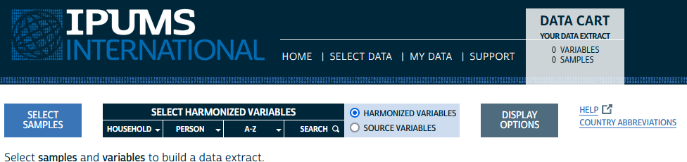
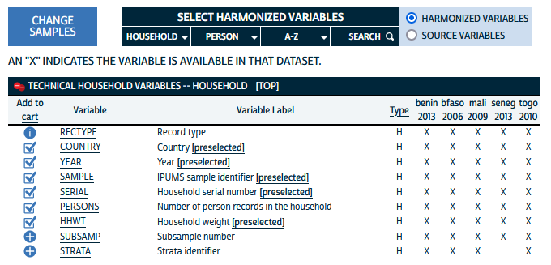
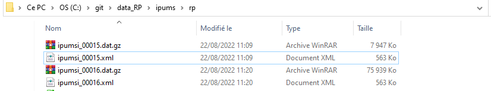

1 Importation
La première étape du travail est d’importer les fichiers dont nous aurons besoin à partir du sute IPUMS International. L’ensemble des données utilisées dans cet exercice sera téléchargée sur le site IPUMS international :
1.1 Conditions d’utilisation
Les données fournies par IPUMS sont soumises à des conditions d’utilisation qui doivent être respectées et que nous avons retraduites ici en français (merci à google translate).
1.1.1 Redistribution interdite
“Toutes les données extraites de la base de données IPUMS International sont destinées au seul usage du licencié. En vertu des accords d’IPUMS International avec des agences collaboratrices, la redistribution des données à des tiers est interdite. Chaque membre d’une équipe de recherche utilisant les données doit demander l’accès et obtenir une licence individuelle”.
- Commentaire : l’ensemble des participants à l’école d’été devra donc acquérir une licence individuelle IPUMS et sera réputé avoir effectué l’ensemble des opérations d’acquisitions décrites par la suite.
1.1.2 Usage : Limitation à la recherche et l’enseignement
“Ces extraits de microdonnées sont fournis à des fins exclusives d’enseignement et de recherche scientifique et ne peuvent être utilisés à d’autres fins sans l’approbation écrite explicite de l’autorité statistique officielle compétente. Il est interdit aux utilisateurs d’utiliser les données d’IPUMS International ou d’autres distributeurs autorisés dans la poursuite de toute entreprise commerciale ou génératrice de revenus, à titre privé ou autre. La publication de résultats de recherche basés sur les microdonnées d’IPUMS International est autorisée dans les communications telles que les articles scientifiques, les revues, les rapports de recherche, etc. L’utilisation de ces données à des fins généalogiques est strictement interdite”
- Commentaire : Les objectifs de l’EE CIST 2023 sont parfaitement en accord avec les règles d’usage de la base. Il faudra toutefois bien prendre garde de citer la source dans l’ensemble des documents pédagogiques ainsi que les éventuels articles de recherche
1.1.3 Confidentialité : interdiction d’identifier des individus
“Les utilisateurs maintiendront la confidentialité des personnes et des ménages. Tous les identifiants directs, ainsi que toutes les caractéristiques qui pourraient conduire à une identification, sont omis des données. Toute tentative de vérifier l’identité des personnes ou des ménages à partir des microdonnées est interdite. Il est également interdit d’alléguer qu’une personne ou un ménage a été identifié dans ces données. Les résultats statistiques susceptibles de révéler l’identité de personnes ou d’entités ne peuvent être communiqués ou publiés sous quelque forme que ce soit.”
- Commentaire : Même si les données sont en général anciennes et portent sur des échantillons de 10% maximum, il est impératif de respecter systématiquement l’obligation de confidentialité et de tenter de repérer une personne si IPUMS n’a pas suffisamment assuré cette condition.
1.1.4 Sécurité : protection des micro-données
“Les utilisateurs mettront en œuvre des mesures de sécurité pour empêcher tout accès non autorisé aux microdonnées acquises auprès d’IPUMS International, de ses partenaires ou distributeurs autorisés. À l’issue de cette recherche, les extraits de données ne peuvent être conservés que s’ils peuvent être sécurisés en toute sécurité. Si la sécurité ne peut être garantie, les microdonnées doivent être détruites.”
- Commentaire : Cette obligation signifie que les données individuelles ne pourront pas être mises à disposition via le serveur de l’EE CIST 2023 sauf si celui-ci est correctement sécurisé. Il faudra les faire télécharger par les stagiaires ou formateur au moment de celle-ci. On pourra en revanche stocker les indicateurs agrégés issus de l’agrégation des données individuelles.
1.1.5 Obligation de citation
“Vous devez citer IPUMS International et l’autorité statistique officielle compétente comme source des microdonnées. Chaque extrait est accompagné d’un langage de citation approprié et pour plus d’informations sur la citation appropriée, reportez-vous à la citation et à l’utilisation. Les publications et les rapports de recherche utilisant IPUMS International doivent être ajoutés à la [bibliographie du projet IPUMS] (https://bibliography.ipums.org/).”
- Commentaire : les documents pédagogiques de l’EE CIST 2023 utilisant les données IPUMS devront se conformer à cette obligation de même que les éventuels articles de recherche qui en seront issus.
1.1.6 Rapports d’erreurs
“L’utilisateur accepte d’informer ipums@umn.edu des erreurs dans les données”
- Commentaire : c’est la moindre des choses dans une perspective éthique et collaborative.
1.1.7 Sanctions en cas de non respect
“La violation de cet accord entraînera la révocation de cette licence, le rappel de toutes les microdonnées acquises, une motion de censure à la ou aux organisations professionnelles concernées et des poursuites civiles en vertu des lois nationales ou internationales, à la discrétion des régents de l’Université du Minnesota. et les agences statistiques officielles. Des sanctions peuvent également être prises contre l’institution à laquelle le contrevenant est affilié.”
- Commentaire : sans commentaires … il serait catastrophique pour le projet d’EE CIST 2023 de voir l’ensemble des cours mis à l’index …
1.2 Données individuelles de recensement
Après avoir créé votre compte, vous pourrez accéder à l’onglet appelé “browse and select data” dans la barre latérale gauche :

Il vous amènera à la fenêtre de sélection des micro-données qui doit ressembler à ceci :

Vous allez alors devoir effectuer successivement trois choix pour constituer votre requête :
- choix de l’échantillon : quels recensements pour quels pays et à quelle date ?
- choix des variables : quelles variables voulez vous extraire ? harmonisées ou propres au pays ?
- choix de la taille des échantillons : le maximum autorisé est de 10% mais vous pouvez choisir un taux plus faible.
1.2.1 Choix des recensements
En cliquant sur le bouton “SELECT SAMPLES” on va tout d’abord choisir les recensements qui nous intéressent. On peut en retenir soit un seul soit plusieurs à la fois. Ici, nous avons retenu cinq recensements correspondant aux pays africains qui participent à l’EE CIST 2023, en retenant à chaque fois le dernier disponible dans IPUMS.

On constate qu’il n’existe malheureusement pas de données pour la Côte d’Ivoire et le Niger dans IPUMS. Par ailleurs les recensements les plus récents ne sont pas forcément disponibles pour les autres pays. Mais il existe une contrepartie positive majeure qui est le travail d’harmonistation des variables qui a été réalisé par IPUMS.
1.2.2 Choix des variables
Il existe deux options différentes pour extraire des variables, selon qu’on souhaite utiliser les données originales propres à chaque pays et chaque date (“Source variables”) ou que l’on préfère utiliser des données harmonisées par IPUMS (“Harmonized variables”) qui utilisent les même code et les même catégories.
La seconde solution apparaît de loin la plus intéressante pour l’EE CIST 2023 puisqu’elle va permettre de proposer des séquences pédagogiques qui seront facilement reproductibles d’un pays à l’autre. A condition évidemment que les variables harmonisées soient disponibles dans tous les pays, ce qui n’est bien évidemment pas toujours vrai.
Des écrans permettent de visualiser pour chacune des variables ou des groupes de variables si elle est disponible pour les différents recensements. Les variables dites “techniques” sont proposées par défaut et il est en général préférable de les garder puisque c’est grâce à elle qu’on pourra ensuite effectuer les pondérations, mettre en relation les individus et les ménages etc.


En cliquant sur la colonne (“Add to cart”) on choisit les autres variables que l’on souhaite retenir. Par exemple, on peut regarder quelles variables harmonisées sont disponibles pour l’équipement des ménages et en choisir trois :

Nous avons effectué une sélection assez large de variables pour l’EE CIST 2023 en privilégiant celles qui étaient disponibles pour au moins 4 des 5 pays. Nous ya vons ajouté des variables plus spécifiques à chaque pays pour l’analyse des migrations. Au total, nous avons retenu 65 variables qui sont décrites en abrégées ci-dessous mais dont on pourra trouver la description détaillée sur le site IPUMS
| Type | Variable | Label |
|---|---|---|
| H | COUNTRY | Country |
| H | YEAR | Year |
| H | SAMPLE | IPUMS sample identifier |
| H | SERIAL | Household serial number |
| H | PERSONS | Number of person records in the household |
| H | HHWT | Household weight |
| H | URBAN | Urban-rural status |
| H | REGIONW | Continent and region of country |
| H | GEOLEV1 | 1st subnational geographic level, world [consistent boundaries over time] |
| H | GEOLEV2 | 2nd subnational geographic level, world [consistent boundaries over time] |
| H | OWNERSHIP (general) | Ownership of dwelling [general version] |
| H | OWNERSHIPD (detailed) | Ownership of dwelling [detailed version] |
| H | ELECTRIC | Electricity |
| H | WATSUP | Water supply |
| H | TRASH | Trash disposal |
| H | TOILET | Toilet |
| P | PERNUM | Person number |
| P | PERWT | Person weight |
| P | RESIDENT | Residence status: de facto, de jure |
| P | RELATE (general) | Relationship to household head [general version] |
| P | RELATED (detailed) | Relationship to household head [detailed version] |
| P | AGE | Age |
| P | AGE2 | Age, grouped into intervals |
| P | SEX | Sex |
| P | MARST (general) | Marital status [general version] |
| P | MARSTD (detailed) | Marital status [detailed version] |
| P | BIRTHYR | Year of birth |
| P | BPLCOUNTRY | Country of birth |
| P | NATION | Country of citizenship |
| P | BPLBJ1 | Department of birth, Benin |
| P | BPLBJ2 | Commune of birth, Benin |
| P | BPLBF | Province of birth, Burkina Faso |
| P | BPLML | Circle of birth, Mali |
| P | BPLSN | Department of birth, Senegal |
| P | RELIGION (general) | Religion [general version] |
| P | RELIGIOND (detailed) | Religion [detailed version] |
| P | SCHOOL | School attendance |
| P | LIT | Literacy |
| P | EDATTAIN (general) | Educational attainment, international recode [general version] |
| P | EDATTAIND (detailed) | Educational attainment, international recode [detailed version] |
| P | YRSCHOOL | Years of schooling |
| P | EMPSTAT (general) | Activity status (employment status) [general version] |
| P | EMPSTATD (detailed) | Activity status (employment status) [detailed version] |
| P | LABFORCE | Labor force participation |
| P | MIGRATEP | Migration status, previous residence |
| P | MIGCTRYP | Country of previous residence |
| P | GEOMIG1_P | 1st subnational geographic level of previous residence, world [consistent boundaries over time] |
| P | MIGYRS1 | Years residing in current locality |
| P | MIG1_P_BJ | Department of previous residence, Benin; consistent boundaries, GIS |
| P | MIG2_P_BJ | Commune of previous residence, Benin; consistent boundaries, GIS |
| P | MIGBF | Province of residence one year ago, Burkina Faso |
| P | MIG1_P_ML | Region of previous residence, Mali; consistent boundaries, GIS |
| P | MIG2_P_ML | Circle of previous residence, Mali; consistent boundaries, GIS |
| P | MIG1_1_SN | Region of residence 1 years ago, Senegal; consistent boundaries, GIS |
| P | MIG1_5_SN | Region of residence 5 years ago, Senegal; consistent boundaries, GIS |
| P | MIG1_10_SN | Region of residence 10 years ago, Senegal; consistent boundaries, GIS |
| P | MIG2_1_SN | Department of residence 1 years ago, Senegal; consistent boundaries, GIS |
| P | MIG2_5_SN | Department of residence 5 years ago, Senegal; consistent boundaries, GIS |
| P | MIG2_10_SN | Department of residence 10 years ago, Senegal; consistent boundaries, GIS |
| P | MIG1_P_TG | Region of previous residence, Togo; consistent boundaries, GIS |
| P | MIG2_P_TG | Prefecture of previous residence, Togo; consistent boundaries, GIS |
| P | DISABLED | Disability status |
| P | DISBLND | Blind or vision-impaired |
| P | DISDEAF | Deaf or hearing-impaired |
| P | DISMUTE | Mute or speech impaired |
1.2.3 Choix du niveau d’échantillonage
Une fois définis les échantillons et les variables vous êtes prêts à télécharger les données mais il reste encore à définir le niveau d’échantillonnage souhaité.
 La valeur initiale qui correspond au maximum autorisé par IPUMS et les organismes producteurs des recensement est en générale égale à 10% des individus et/ou des ménages. Mais on peut opter pour un échantillon plus réduit en fixant un autre pourcentage ou un nombre précis d’individus. On peut par exemple se ramener à 1% seulement des observations ce qui divise par 10 la taille du fichier :
La valeur initiale qui correspond au maximum autorisé par IPUMS et les organismes producteurs des recensement est en générale égale à 10% des individus et/ou des ménages. Mais on peut opter pour un échantillon plus réduit en fixant un autre pourcentage ou un nombre précis d’individus. On peut par exemple se ramener à 1% seulement des observations ce qui divise par 10 la taille du fichier :
 ### Récupération des données et métadonnées
### Récupération des données et métadonnées
Une fois lancée la requête à l’aide du bouton “SUBMIT EXTRACT” il faut attendre quelques minutes (généralement 2 ou 3) pour accèder au résultat. Celui-ci est annoncé par un courriel mais peut aussi être suivi directement par le navigateur :
 On peut utiliser une requête existante pour en construire une autre. Dans l’exemple ci-dessus, nous avons construit d’abord une requête pour une extraction de densité 1% puis une seconde requête pour une extraction de densité maximale (10%) afin de pouvoir comparer les résultats obtenus.
On peut utiliser une requête existante pour en construire une autre. Dans l’exemple ci-dessus, nous avons construit d’abord une requête pour une extraction de densité 1% puis une seconde requête pour une extraction de densité maximale (10%) afin de pouvoir comparer les résultats obtenus.
Pour pouvoir charger ensuite les données dans R ou un autre logiciel, nous aurons besoin à chaque fois de deux fichiers :
- le fichier .DAT qui contient les données au format compressé .gz
- le fichier DDI qui contient les métadonnées au format .xml

- N.B. : Il est inutile de décompresser les fichiers de données au format .gz car cela accroîtrait inutilement leur place et risquerait de bloquer l’opération suivante d’importation.
1.2.4 Importation dans R
Pour importer les données dans R, il faut installer le package ipumsr qui va nous permettre de lire les métadonnées puis d’importer les données en une seule opération.
library(ipumsr)
# Importation de l'échantillon à 1%
ddi <- read_ipums_ddi("ipums/rp/ipumsi_00015.xml")
data <- read_ipums_micro(ddi)
saveRDS(data,"ipums/rp/samp1pct.RDS")
# Importation de l'échantillon à 10%
ddi <- read_ipums_ddi("ipums/rp/ipumsi_00016.xml")
data <- read_ipums_micro(ddi)
saveRDS(data,"ipums/rp/samp10pct.RDS")Nous reviendrons ultérieurement sur le format du tableau R obtenu qui n’est pas un data.frame standard car il comporte des labels supplémentaire donnant à la fois le nom des variables et le code de leurs modalités.